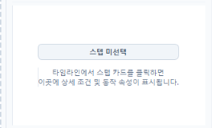
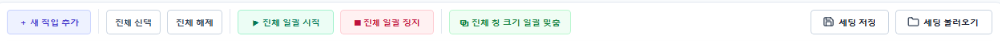
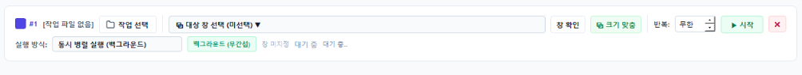

AutoPixel Studio 시각 기능 도감
단순한 텍스트 나열을 넘어, 실제 툴 화면에서 크롭한 실제 버튼 UI 스니펫과 함께 각 기능의 동작 원리와 실무 활용법을 직관적으로 안내합니다.
AutoPixel Studio 메인 인터페이스 구조
상단 2단 마스터 툴바, 좌측 템플릿 매니저, 중앙 3대 타임라인 뷰, 우측 상세 인스펙터로 정돈된 작업 공간 구조입니다.

상단 제어 바 (프로젝트 관리 및 창 바인딩)
실제 툴 상단 1열과 2열의 각 버튼 영역을 크롭하여 실제 모양과 기능을 1:1로 매칭했습니다.


해상도 동기화 & 최적 크기 복원
창 크기가 변경되면 캡처 픽셀 배율이 달라져 인식률이 저하됩니다. 창 크기를 항상 100% 동일하게 유지해 주는 핵심 바입니다.

- 기억: 템플릿 이미지를 최초 캡처할 당시의 완벽한 가로x세로 해상도를 메타데이터에 스냅샷으로 저장합니다.
- 복원: 사용자가 창 크기를 임의로 드래그하여 흐트러뜨려도, [복원] 클릭 한 번으로 기준 크기로 강제 원상 복구합니다.
템플릿 이미지 관리 패널 (좌측)
인식할 버튼/아이콘 이미지를 등록하고 정밀한 비전 감도 조건을 설정합니다.


- 3초 캡처: 마우스를 올렸을 때만 열리는 드롭다운 메뉴나 마우스 오버 툴팁을 캡처할 수 있도록 3초 카운트다운 후 캡처 화면을 띄웁니다.

- 배경색 무시 (Canny 엣지): 색상 정보를 배제하고 외곽 윤곽선(Edge)만 대조하여 다크모드/라이트모드 변화에도 형태를 찾아냅니다.

설정 후 [인식 테스트] 버튼을 누르면 현재 대상 화면에서 감지된 유사도 점수와 감지 좌표를 실시간으로 테스트합니다.
3대 워크플로우 뷰 및 시퀀스 편집 (중앙)
카드형 타임라인, 클래식 표 뷰, 플로우차트 도식도 3가지 모드로 작업 흐름을 자유롭게 설계합니다.

- 클래식 표 뷰: 수십 개의 스텝을 엑셀 행처럼 컴팩트하게 일괄 확인.
- 알고리즘 플로우차트: 조건 분기(IF 점프) 흐름을 노드 다이어그램으로 시각화.


- 되돌리기 / 다시실행: 실수로 스텝을 삭제하거나 순서를 바꿨을 때 단축키(Ctrl+Z / Ctrl+Y)로 언제든 안전하게 복구.
우측 스텝 상세 속성 (Inspector Panel)
선택한 스텝 카드의 정밀 좌표 오프셋과 예외 처리 조건을 실시간 설정합니다.

- 동작 후 대기 시간 (Sleep): 버튼 클릭 후 웹페이지나 프로그램 화면이 렌더링될 수 있도록 0.3초~1.0초의 적절한 완충 대기 시간을 부여하는 것이 좋습니다.
멀티 실행 러너 (Multi-Runner) 상세 도감
여러 개의 창을 동시에 띄워 서로 다른 자동화 작업을 병렬로 제어하는 다중 실행 관제 센터입니다.


- 전체 선택 / 전체 해제: 목록의 모든 작업 카드를 일괄 선택하거나 체크 해제합니다.
- ▶ 전체 일괄 시작 / ■ 전체 일괄 정지: 바인딩된 모든 창의 매크로를 단 1클릭으로 동시 가동하거나 비상 시 즉각 정지합니다.
- ⧉ 전체 창 크기 일괄 맞춤: 띄워진 다중 클라이언트 창들을 기준 최적 크기(1920x1080 등)로 한 번에 균일하게 리사이징 정렬합니다.
- 💾 세팅 저장 / 📁 세팅 불러오기: 다중 작업 구성과 창 바인딩 매핑 상태를 프리셋 파일로 저장해 매일 출근 시 원클릭으로 세팅을 복원합니다.

- ⧉ 대상 창 선택 (미선택 ▾): 신호를 전송할 대상 윈도우 창 핸들을 매핑합니다.
- 창 확인: 바인딩된 창이 화면에서 깜빡여 대상이 맞는지 즉시 검증합니다.
- ⧉ 크기 맞춤: 해당 창 1개만 기준 픽셀 해상도로 즉각 맞춥니다.
- 반복 스핀박스 & ▶ 시작: 무한 루프 또는 지정 횟수 반복 후 개별 인스턴스만 독립 시작합니다.
- 상태 표시줄: 현재 창의 매크로 수행 단계, 반복 회차, 실시간 성공/대기 상태가 실시간 출력됩니다.
실무 비즈니스 자동화 시나리오 예시
AutoPixel Studio를 활용하여 매일 반복되는 정형 데이터 처리 및 전산 업무를 자동화하는 합법적인 비즈니스 실전 활용 사례입니다.
사내 ERP 일괄 정산 다운로드
매일 오전 사내 ERP 시스템에 로그인하여 날짜 범위를 선택하고, 매출 정산 엑셀 파일을 백그라운드로 안전하게 다운로드받는 시퀀스.
엑셀 목록 기반 웹 폼 반복 입력
엑셀 시트에 정리된 수백 건의 배송 송장 번호나 품목 데이터를 사내 포털 등록 폼에 한 줄씩 순차적으로 자동 기입하고 결과를 저장.
장애 팝업 감지 및 자동 복구 재시작
24시간 구동되는 무인 시스템 화면에 오류 알림창이나 네트워크 단절 팝업이 나타날 경우 [확인] 클릭 및 프로세스 자동 재기동 루틴.